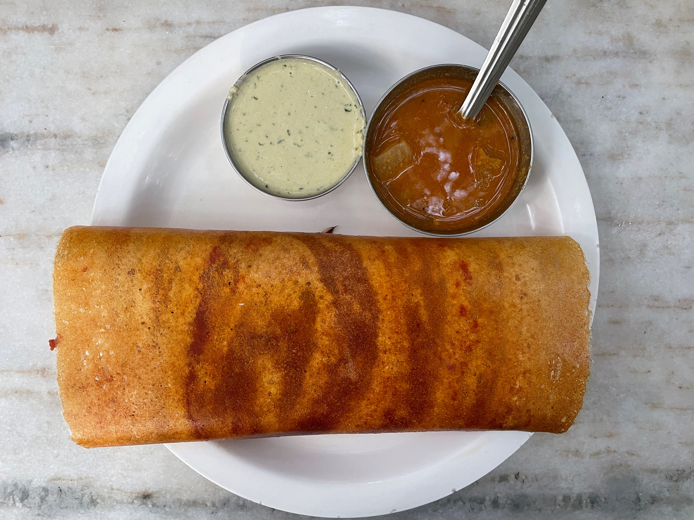

Airlines Hotel has a beautiful patio surrounded by old banyan trees and a large parking space which acts as a defacto drive-in for this iconic eatery in the heart of Bengaluru.
"... proprietor Diwakar Rao will have you know, mobster Haji Mastan spent two months in room number 47 "after his heyday", MF Hussain doodled on paper napkins for hours that he handed to the waiters, Yeddyurappa held countless meetings before he became CM, and Dr Rajkumar was a breakfast regular". - Bangalore Mirror, India Times
The Dose
Tucked away on a busy Lavelle Road, Airlines Hotel serves a variety of dishes including delectable South Indian snacks. Amongst these is the humble masala dose. Paired with their rich and dark filter coffee, I guarantee that you will leave this place with a wide smile on your face as if you have arrived at the destination of your long-awaited vacation. The dose was a perfect golden brown with the red chutney inside and was served with sambhar and coconut chutney. It was light and airy. After a momentary dip in the heavenly sambhar, it sure did cause a turbulence of flavours in my mouth. My tastebuds fastened their seatbelts for the next morsel. Delicious.
 Crispy and airy.Our Dose?
Recently while walking on a bustling Church Street one Saturday evening, I felt a thin veil of sadness drape over me. As I squeezed past people on the sidewalk, I could hear a lot more Hindi, Marathi and Bengali than I had before. It should not have come to me as a surprise. As the pandemic wanes, multitudes of people who were hired remotely from all over the country have moved into Bengaluru. For this already populous yet extremely welcoming city, I wonder how many more people she can home. You must have heard about her infamous traffic jams, her water woes and unaffordable housing but it has only gotten worse. Yet, people come streaming in. The Silicon Valley of India. A little introspection as I begin eating my dose reveals the source of my mild melancholy. Bengaluru is not mine anymore. Neither is she yours. She is ours and we share her now more than ever. This metropolis has always been an abode for immigrants from all over the state and country. But now as I see new immigrants talk about how perfectly pleasant the weather is on their stroll through Cubbon Park or talk about the startup they work for while enjoying a darshini filter coffee, I feel like a child who is being forced to share his sparkly new toy with a friend during playtime. I should be happy that so many more people are going to be enchanted by this beautiful city and bask in all she has to offer. But I'm scared she will lose her charm. I'm scared she won't be the Bengaluru I know and grew up in. These thoughts flood my head and as a first-generation city immigrant myself, I attempt to undrape this veil. Just like my parents did some twenty-five years ago, these people are here for better opportunities or to advance their careers or simply for the challenge a change in cities entails. Whatever it is, I know one thing for sure. Bengaluru has a huge heart. Her stunning sunsets and tiffin rooms are for everyone. Now more than ever.